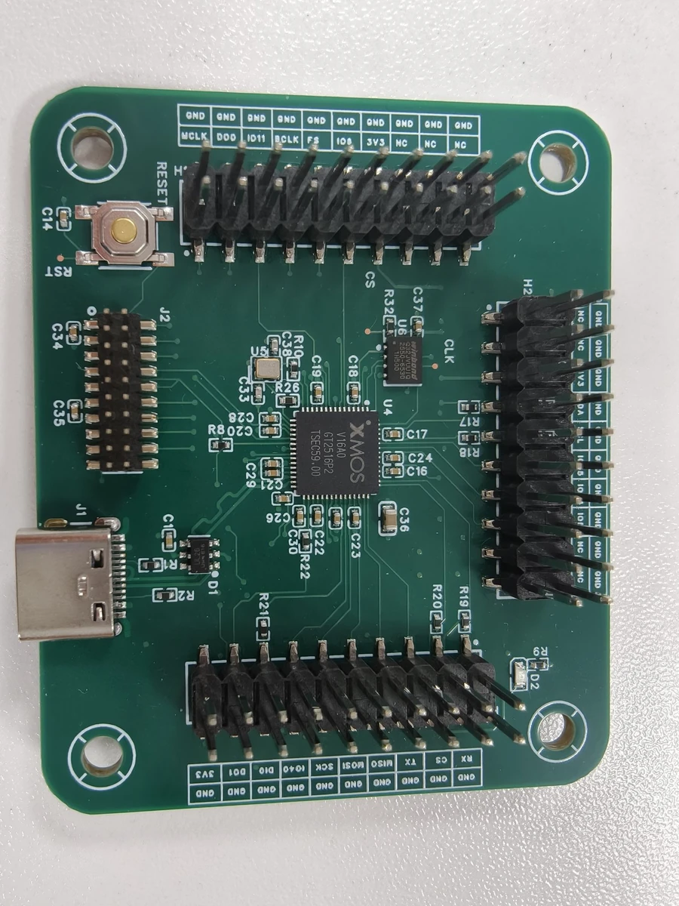
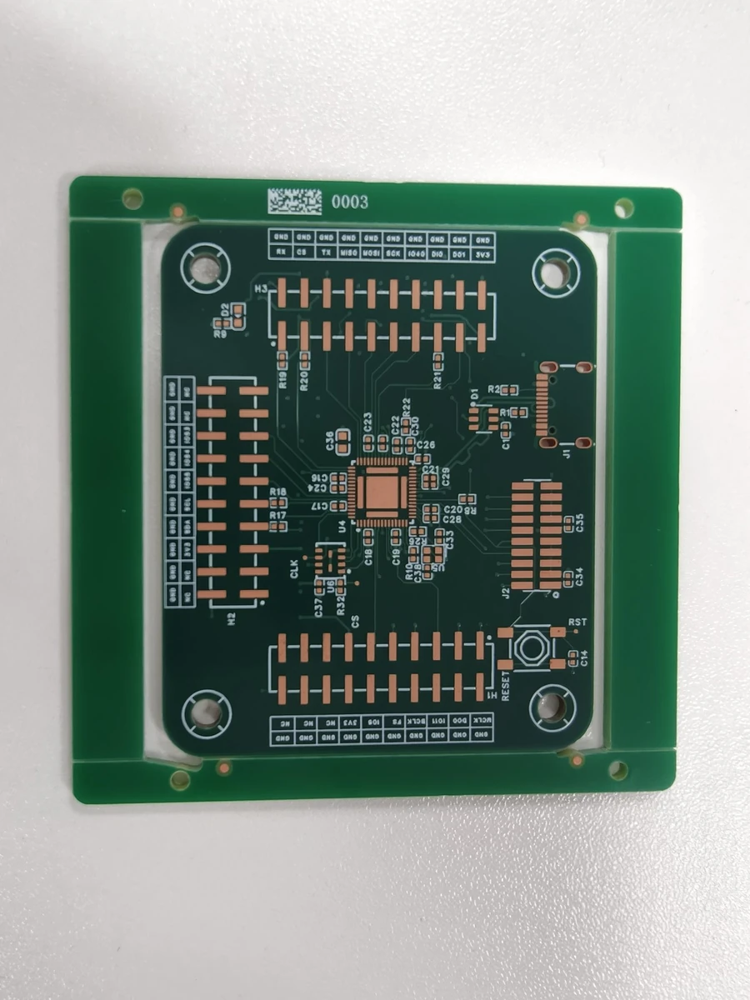
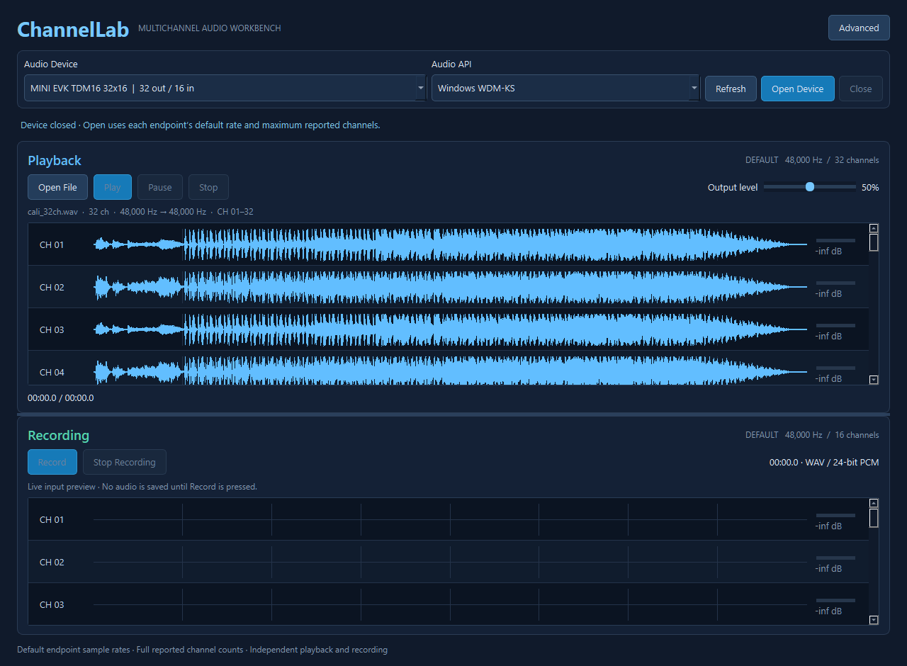
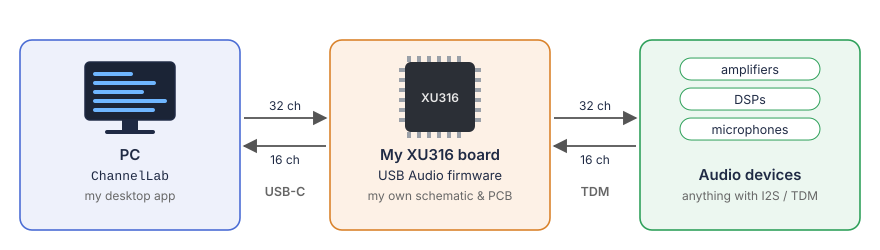

I Made a 32-Channel USB Audio Interface in My Spare Time

This little green board is something I designed and built in my spare time. Plug it into a PC over USB-C and it shows up as a sound card with 32 outputs and 16 inputs, all running at the same time.
I drew the schematic, laid out the PCB, brought the board up, adapted the firmware, and wrote the desktop app that drives it. Hardware and software, start to finish. 😎
Why build one?
In automotive audio, a lot of testing means pushing dozens of audio channels between a PC and the system under test: amplifiers, DSPs, microphone arrays. Professional multichannel test gear does exist, but there isn’t much choice, and it isn’t cheap.
I also simply wanted to know: could I build one myself, from an empty schematic to a working sound card?
For the brain I picked the XMOS XU316. It’s a chip made for exactly this kind of job: real-time, many-channel audio, with a mature USB Audio reference design behind it.
The hardware half
With XMOS’s official multichannel audio reference board as a guide, I kept only the essentials: the XU316, a crystal, flash memory for the firmware, three power rails brought up in sequence, and USB-C for both power and data. It all sits on a four-layer board with a solid ground plane underneath.
Everything else is broken out to three identical 2×10 pin headers: the I2S/TDM audio bus, SPI, I2C, a UART and some spare GPIO. There’s also a small connector for XMOS’s debug adapter, used to load and debug firmware.



Then came bring-up, the nervous part of every hardware project. Measure each power rail before trusting it. Connect the debug adapter. Load the firmware. And then the moment that makes it all worth it: the PC recognises a brand-new USB audio device, with 32 outputs and 16 inputs.
The software half
Firmware
On the chip, I took XMOS’s official USB Audio SDK and adapted it into a build for my own board. It runs as a standard USB Audio Class 2.0 device, so no special driver tricks are needed on the PC side. The audio goes out over two TDM lines of 16 channels each (that’s the 32 outputs) and comes back in over one more (the 16 inputs).
ChannelLab
Ordinary audio tools aren’t great at playing 32 channels and recording 16 at the same time, so I wrote my own desktop app: ChannelLab.

- Plays an audio file across up to 32 channels, with a waveform for every channel.
- Records all 16 inputs at once to a 24-bit WAV file, with live level meters.
- Generates a 1 kHz test tone on every output with one click.
- Lets any recorded channel be soloed on ordinary headphones for a quick listen.
- Ships as a single Windows EXE, so colleagues can just double-click it.
Putting it together
End to end, it looks like this:

The obvious next step is to pair it with an A2B transceiver. Then this little board could stand in for a car’s head unit on a test bench, playing to amplifiers and listening to microphones, with a laptop in charge.
Two hats
The best part of doing both halves myself: when something sounds wrong, I don’t have to guess which side of the fence the problem is on. I can put a probe on the clock line in the afternoon and step through the buffer code in the evening.
So the next time someone asks whether I’m a hardware engineer or a software engineer, I’ll just hand them this board.